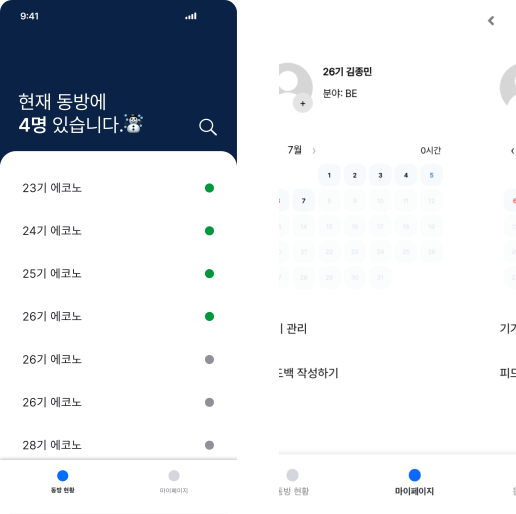

BELLMIN
알 때까지 파고드는 개발자 김종민입니다.


projects
EEOS,
동아리 행사 관리 시스템

EEOS
Econovation Event Operating System 의 약자로
에코노베이션 동아리의 행사 관리 및 출석 체크 시스템입니다.
에코노베이션 동아리의 행사 관리 및 출석 체크 시스템입니다.
project info
year
2024.03 ~ NOW
Role
back-end developer
1. 짧은 기간 내 코드베이스를 빠르게 이해하여 프로젝트 전반 구조를 파악하여 업무 적응
2. Redis Delayed Queue를 활용한 출석체크 예약기능 구현
3. Tree 구조를 활용한, 댓글/답글 구조 모델링
2. Redis Delayed Queue를 활용한 출석체크 예약기능 구현
3. Tree 구조를 활용한, 댓글/답글 구조 모델링


Econo-Recruit,
동아리 리크루팅 플랫폼

Econo-Recruit
Econovation 동아리의 신입 회원 모집 플랫폼입니다.
project info
year
2024.07 ~ NOW
Role
back-end developer
1. 짧은 기간 내 코드베이스를 빠르게 이해하여 프로젝트 전반 구조를 파악하여 업무 적응
2. FSM 패턴을 적용하여 합/불 상태관리 시스템 도입 및 구현
3. 이벤트 기반 합/불 메일링 자동화 시스템 구현
4. 이메일 발송 시 DB Connection Timeout 으로 인한 문제 해결
2. FSM 패턴을 적용하여 합/불 상태관리 시스템 도입 및 구현
3. 이벤트 기반 합/불 메일링 자동화 시스템 구현
4. 이메일 발송 시 DB Connection Timeout 으로 인한 문제 해결
ABAS,
농업 빅데이터 분석 웹 사이트

ABAS
농업에 대한 빅데이터의
데이터 분석, 데이터 시각화, 데이터 예측과 같은
기능을 수행하는 AI 기반 웹 사이트입니다.
데이터 분석, 데이터 시각화, 데이터 예측과 같은
기능을 수행하는 AI 기반 웹 사이트입니다.
project info
year
2024.07 ~ 2025.06
Role
back-end developer
1. 본인 인증을 위한 이메일/문자 인증 설계 및 구현 (Naver SMS, Google SMTP)
2. 구아바 캐시를 활용하여 효율적인 메모리 사용의 인증번호 관리 기능 구현
2. 구아바 캐시를 활용하여 효율적인 메모리 사용의 인증번호 관리 기능 구현
Whoz-in,
wi-fi 기반 동아리방 재실 확인 시스템

Whoz-In
Wi-Fi 기술을 기반으로 하는
동아리방 재실 인원 현황 확인 서비스 입니다.
동아리방 재실 인원 현황 확인 서비스 입니다.
project info
year
2024.09 ~ 2025.03
Role
back-end developer
1. mDNS, ARP 프로토콜을 활용한 동아리방 재실 현황 알고리즘 설계 및 구현
2. Let’s encrypt를 활용한 SSL 적용으로 인한 AWS 서버 비용 감축
3. Spring Security 도입 및 Filter Chain 설정 고급화
4. 가독성과 유지보수를 위한 클린아키텍처 및 CQRS 적용
5. 도메인 로직 보호를 위한 도메인 중심 설계 적용
2. Let’s encrypt를 활용한 SSL 적용으로 인한 AWS 서버 비용 감축
3. Spring Security 도입 및 Filter Chain 설정 고급화
4. 가독성과 유지보수를 위한 클린아키텍처 및 CQRS 적용
5. 도메인 로직 보호를 위한 도메인 중심 설계 적용
about me

저는 알 때까지 끊임 없이 파고들어 학습하는 백엔드 개발자입니다.
기술에 대한 이해도가 없으면, 안정적이고 신뢰할 수 있는 서비스를 관리하고 운영할 수 없습니다. 저는 타고난 끈기와 인내심으로 기술을 깊이 있게 학습합니다.
학력
- 전남대학교 소프트웨어 공학과 (2020.3 ~ 2026.2)
자격증
- SQLD
- 네트워크 관리사
수상내역
- 전남대학교 AI 산학 협력 해커톤 동상 (2023.8)
- 전남대학교 프로그래밍 경진대회 장려상 (2025.6)
대외활동
- 전남대학교 IT 개발동아리 에코노베이션 (2023.9 ~ 2025.6)
- 전남대학교 IT 개발동아리 부회장 (2024.2 ~ 2025.1)
- 우리에프아이에스 아카데미 5기 교육생
기술
- JAVA
- Spring-Boot
- Docker
- AWS
- Git/Github